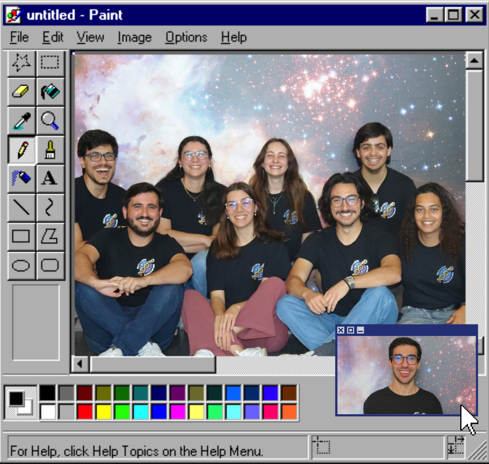
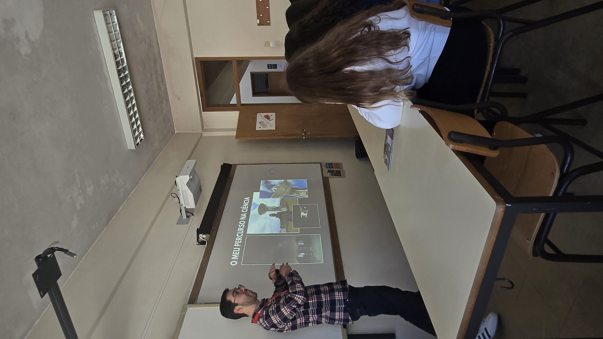

Os AstroBioLusitanos são uma equipa de jovens cientistas portugueses dedicados à área da Astrobiologia!
O nosso principal objetivo é ajudar estudantes, e o público em geral, a explorar os diversos campos científicos associados à Astrobiologia e Ciências do Espaço, destacando as múltiplas oportunidades de carreira nesta área.
Através do nosso Instagram @astrobiopt, e de workshops e apresentações em escolas, comunicamos ciência de forma simples, acessível e divertida, de forma a inspirar jovens portugueses a seguirem carreiras nas ciências espaciais e promovendo a presença de Portugal na comunidade global de Astrobiologia.

O que a equipa tem feito recentemente.

Fomos até à Escola D. Pedro IV, em Mindelo, conversar com alunos do 9.º ano sobre o que é a astrobiologia, o nosso percurso na ciência e como também eles podem seguir este caminho.
29 de março de 2026